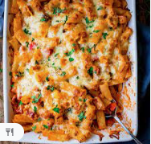

Pastabake

Description
Cheesy Pasta Bake With Chicken And Bacon is one of those dinners
that the kids can polish off in no time - regardless of how many
veggies I sneak in there. Peppers, onions, tomatoes, spinach
- it all gets thrown in.
Ingredients
- 400 g dried pasta
- 1 tbsp vegetable oil
- 3 large chicke breasts
- 1 large onion
- 1 red pepper
- 1 yellow bell pepper
- pinch of salt
- 2 cloves garlic
Steps
- Preheat the oven to 190c/375f. Boil a large pan of
water and cook the pasta for 1 minute less than
recommended on the pack. Drain.
- Whilst the pasta is cooking, heat the oil on a medium heat, in a large
frying pan. Add the chicken, and cook until
just sealed - about 5 minutes.
- Add the onion and cook for a further 3-4 minutes until the onion
is softened.
- Add the chopped peppers, salt, pepper, garlic, tomato puree,
oregano and thyme. Stir and cook for 2-3 minutes.
- Stir in the tinned tomatoes and cream, bring to a gentle bubble, then add the pasta, spinach and cooked bacon.
Stir everything together, then transfer to a large baking dish.
- Top with the cheddar and mozzarella, and place in the oven for 20-25
minutes, until the cheese is golden brown.
- Take out of the oven and top with parsley before serving.